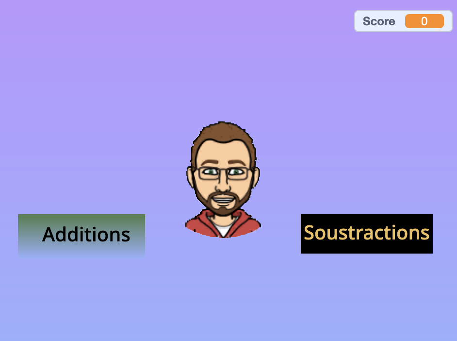
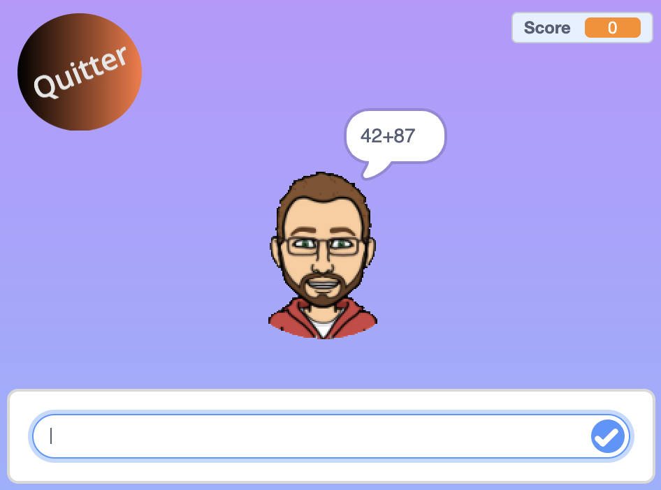
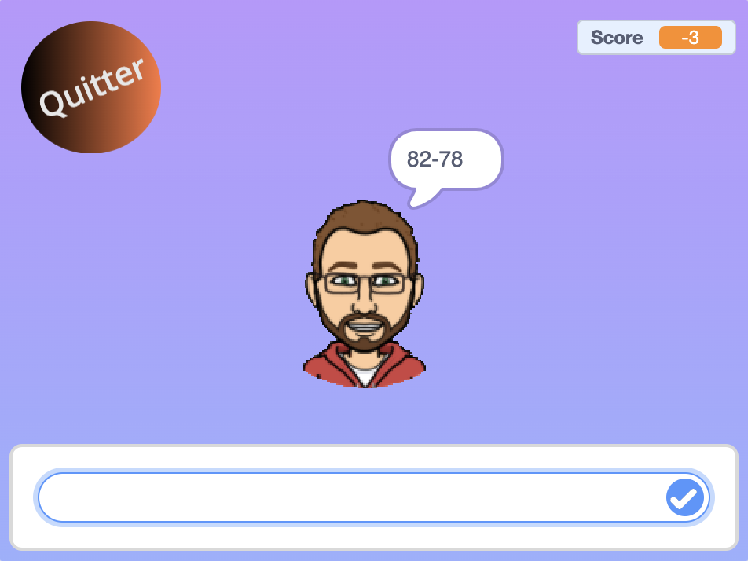

Nous avons décidé de recréer Gomaths avec une interface dans laquelle il est possible de choisir entre additions et soustractions. Ce projet est destiné à des élèves de 9e année. Il nécessite quelques connaissances, et n'est donc pas à faire au début. Le projet a été décomposé en sous projets dans un studio scratch. Les blocs à utiliser sont disposés en format éclaté.
Ce projet a été réalisé en 4 périodes de 45 minutes.
| Premier exercice : Sprites et sélection du jeu |
 | Deuxième exercice : Additions |
 |
| Troisième exercice : Soustractions |
 |